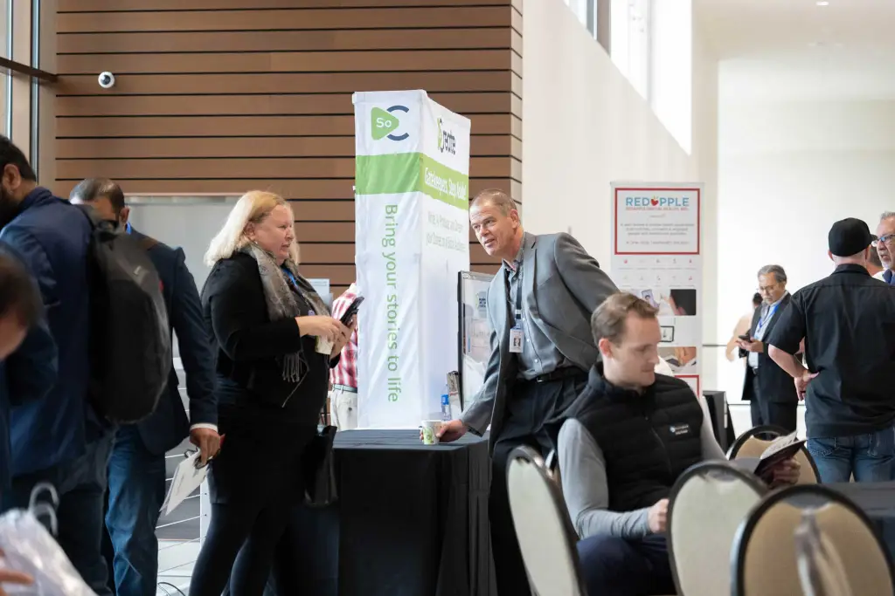

History
TechCon is an annual conference that has been providing a platform for industry experts to discuss technical development and solutions which improve key high voltage maintenance programs and asset management strategies for the aging electrical grid infrastructure consistently since 1996. Attendees include a mix of utility & power generation experts, utility workforce members, corporate suppliers, and decision-makers, all eager to educate, train, network, and share their vast knowledge and experiences.
Mission
Our mission extends beyond financial support; we aim to inspire the next generation of entrepreneurs by:
- Striving together to build a brighter future where innovation thrives, investments abound, entrepreneurship flourishes, and positive change permeates every aspect of society.
- Providing mentorship, resources, and networking opportunities to help them realize their aspirations.
- Recognizing the importance of advocacy and collaboration in shaping policies and frameworks conducive to innovation and entrepreneurship.
- Engaging with policymakers, industry leaders, and other stakeholders to create an ecosystem that fosters innovation, rewards risk-taking, and promotes inclusive growth. 
Past Speakers
Professional Experience
Dr. Ko has served in multiple leadership positions across different settings, spanning industry, health systems, academia, and government. Currently Dr. Ko serves as the Vice President of Innovation and Strategic Initiatives for Sharp HealthCare, with responsibility for planning, development, and execution of key innovation, commercialization, and strategic priorities across the enterprise.
Prior to this role, Dr. Ko served as the Director of Data Governance and Interoperability for Sharp HealthCare, where he had responsibility over enterprise data governance, data exchange practices internal and external to the health system, research technology, and ambulatory telehealth. Before joining Sharp HealthCare, Dr. Ko was Director of Clinical Research at a non-profit 501(c)(3) medical research organization overseeing a broad portfolio of applied medical research and data science initiatives focused on senior-specific models of care with an emphasis on emergency care and telehealth.
Professional Experience
Etienne de Bruin began his career as a software developer in his native South Africa before moving to Germany, where he joined a startup building innovative products in the data encryption space, then to San Diego, where he managed the supply chain and business intelligence of a biotech startup. From 2005 to 2015, Etienne co-founded a company, where he served as CTO, navigating SaaS product development in a rapidly scaling environment and establishing himself as a highly effective C-level executive. After serving many organizations as advisory board member or CTO, Etienne founded 7CTOs, a peer group and coaching organization supporting CTOs, technical founders, and other executive leaders.